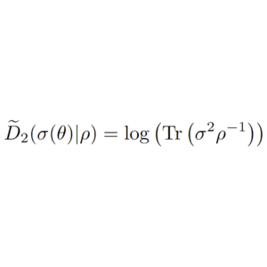
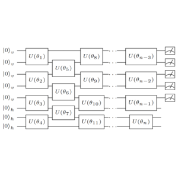
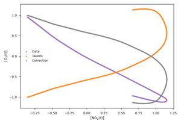
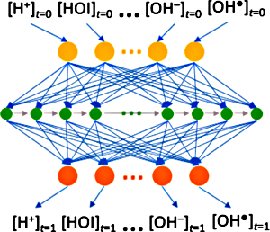
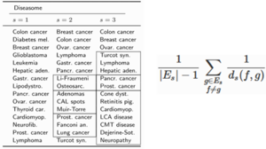
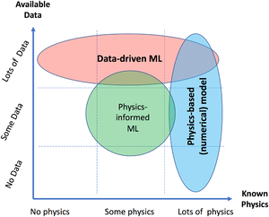
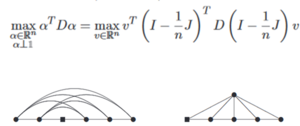
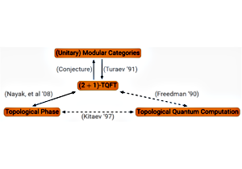
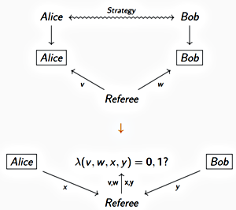
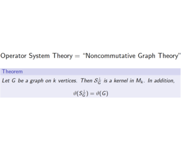

Articles



Modeling Atmospheric Data and Identifying Dynamics: Temporal Data-Driven Modeling of Air Pollutants
with Javier Rubio-Herrero, Louis Fan
Submitted
[ arXiv ]

Application of entropy and signal energy for ultrasound-based classification of three-dimensional printed polyetherketoneketone components
with Francesco Luzi, Michelle Fenn, Joseph Christ, Zachary Kennedy, Tamas Varga, Michael Hughes
The Journal of the Acoustical Society of America
[ Paper ]

Tracking the Chemical Evolution of Iodine Species Using Recurrent Neural Networks
with Jenna Bilbrey, Michel Sassi, Andrew Ritzmann, Neil Henson, Malachi Schram
ACS Omega
[ Paper ] [ Press Release ]

Robust Assessment of Real-World Adversarial Examples
with Brett Jefferson
CVPR 2020 Workshop on Adversarial Machine Learning in Computer Vision
[ Paper ] [ arXiv ] [ Talk (CVPR 2020) ] [ Slides (CVPR 2020) ]


Physics‐Informed Deep Neural Networks for Learning Parameters and Constitutive Relationships in Subsurface Flow Problems
with Alexandre Tartakovsky, Paris Perdikaris, Guzel Tartakovsky, David Barajas-Solano
Water Resources Research
[ Paper ] [ arXiv ] [ Slides (Indiana) ] [ Repo ]

On the Structure of Isometrically Embeddable Metric Spaces
with Katy Nowak and Steven Young
In Peer-Review
[ arXiv ]

Classification of Rank 5 Premodular Categories
with Paul Bruillard
Journal of Mathematical Physics
[ Paper ] [ arXiv ] [ Slides (JMM 2017) ]

Quantum Graph Homomorphisms via Operator Systems
with Vern Paulsen
Linear Algebra and its Applications
[ Paper ] [ arXiv ] [ Slides (Barcelona 2015) ] [ Slides (JMM 2016) ]

Lovász Theta Type Norms and Operator Systems
with Vern Paulsen